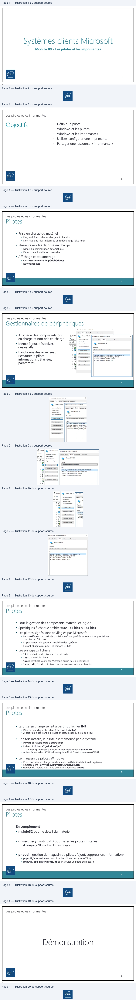
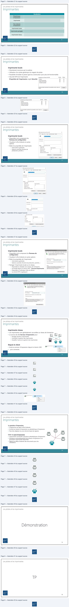
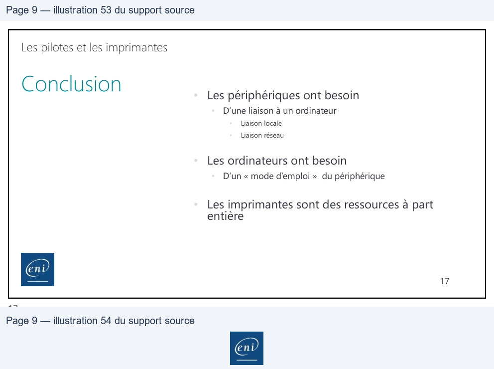

Transcription du document du Drive TSSR. La mise en forme est adaptée au Web ; les compléments IA du portail sont présentés séparément.
Module 09 – Les pilotes et les imprimantes
1
1
Les pilotes et les imprimantes
2
2
Les pilotes et les imprimantes
• Prise en charge du matériel
• Plug and Play : prise en charge « à chaud »
• Non Plug and Play : nécessite un redémarrage (plus rare)
• Plusieurs modes de prise en charge
• Détection et installation automatique
• Détection et installation manuelle
• Affichage et paramétrage
• Outil Gestionnaire de périphériques
• Devmgmt.msc
3
3
Les pilotes et les imprimantes
• Affichage des composants pris
en charge et non pris en charge
• Mettre à jour, désactiver,
désinstaller
• Fonctionnalités avancées :
Restaurer le pilote,
informations détaillées,
paramètres
4
4
End
Propriétés de: VMware SVGA 3D
x
Général Plote | Détls | Événements | Ressources
wh Gestio œ ‘VMware SVGA 30 À propriétés de:VMware
SVGA 3D.
x
Fichier | Fouriseurdupiote. | Général
Picte | Détais | Événements | Ressources
+
| [Date dupicte
Veron du ice
Dy, Ver SGAD
Veh Wit
gra rune
=)
Propriété
va
Numéros didentfication du matériel
v
Mare àjourle pot
Valeur
>
PCI\VEN_15AD4DEV. 04058SUBSYS_04051SAD8REV. 00
> ES | Pestarerie piote
PCI\VEN_15ADSDEV_04058SUBSYS_040515AD
>
PCI\VEN_15AD4DEV. 04058CC_030000
, Q
Dose
PCIEN_15ADBDEV_04058CC_0300
> Set
| eaten
>=
>a
End
Les pilotes et les imprimantes
• Pour la gestion des composants matériel et logiciel
• Spécifiques à chaque architecture : 32 bits ou 64 bits
• Les pilotes signés sont privilégiés par Microsoft
• Les certificats sont délivrés par Microsoft ou générés en suivant les procédures
fournies par Microsoft
• Ils permettent de garantir la stabilité des systèmes
• Ils sont obligatoires pour les éditions 64 bits
• Les principaux fichiers
• *.inf : définition du pilote au format texte
• *.sys : pilote lui-même
• *.cat : certificat fourni par Microsoft ou un tiers de confiance
• *.exe, *.dll, *.xml… : fichiers complémentaires selon les besoins
5
5
Les pilotes et les imprimantes
• La prise en charge se fait à partir du fichier INF
• Directement depuis le fichier (clic droit Installer)
• À partir d’un assistant d’installation (setup.exe) ou de mise à jour
• Une fois installé, le pilote est mémorisé par le système
• Permet sa réinstallation automatique
• Fichiers INF dans C:\Windows\inf
• Chaque pilote installé manuellement génère un fichier oemXX.inf
• Autres fichiers dans C:\Windows\system32 et C:\Windows\sysWOW64
• Le magasin de pilotes Windows
• Pour une prise en charge immédiate du matériel (installation du système)
• Emplacement : C:\Windows\System32\DriverStore
• Gestion du magasin en ligne de commande avec pnputil
6
6
Les pilotes et les imprimantes
En complément
• msinfo32 pour le détail du matériel
• driverquery : outil CMD pour lister les pilotes installés
• driverquery /SI pour lister les pilotes signés
• pnputil : gestion du magasin de pilotes (ajout, suppression, information)
• pnputil /enum-drivers pour lister les pilotes tiers (oemXX.inf)
• pnputil /add-driver pilote.inf pour ajouter un pilote au magasin
7
7
Les pilotes et les imprimantes
8
8

Les pilotes et les imprimantes
Vocabulaire
Périphérique
d'impression
Le matériel : moteur permettant de sortir la feuille imprimée
Imprimante
Le logiciel : envoie l'ordre d'impression au périphérique d'impression
(pilote, configuration, file d'attente d'impression, port d'impression)
File d'attente
d'impression
Service spouleur : conversion numérique du document dans un langage
interprétable par le périphérique d'impression. Envoi du job vers le port
d'impression
Imprimante locale
Périphérique d'impression directement relié à l'ordinateur (via un port local)
Imprimante partagée
Imprimante locale partagée sur le réseau grâce à l'OS de l'ordinateur.
Disponible si et seulement si l'ordinateur est allumé.
Imprimante réseau
Imprimante indépendante. Possède son propre OS, une interface réseau, un
service web pour la configuration
9
9
Les pilotes et les imprimantes
Imprimante locale
• Directement reconnue par le système
• Utilisation d'un pilote générique du magasin de pilote
• Possibilité d'installer le pilote signé du constructeur pour plus de fonctionnalités
• Sécurité NTFS de l'imprimante
(Propriétés de l'imprimante onglet Sécurité)
10
10
Autorisations pour Romain GAUTIER
Autoriser
Refuser
Imprimer
M
oO
Gérer cette imprimante
A
o
Gestion des documents
4
Oo
Autorisations spéciales
Pour les autorisations spéciales et les paramètres avancés, cliquez sur
‘Avancé
Avancé.
Les pilotes et les imprimantes
Imprimante locale
• Disponible via le composant du
Panneau de configuration
• Visualiser la file d'attente et autres
options
• Éditer les propriétés de l'imprimante
• Informations générales
• Options avancées (horaire de
production, priorité…)
11
11
Les pilotes et les imprimantes
Imprimante locale
• Disponible via le composant du Panneau de
configuration
• Visualiser la file d'attente et autres options
• Éditer les propriétés de l'imprimante
• Informations générales
• Options avancées (horaire de production, priorité…)
• Partager l'imprimante locale sur le réseau
• Disponible et utilisable via le réseau de l'entreprise
• Accessible depuis le chemin UNC : \\serveur\imprimante
• Disponible si l'ordinateur hôte est allumé
• Les droits NTFS s'appliquent
12
12
1 Propriétés de Microsoft PrinttoPDF
x
Général Patage Pots | Avancé Gestion des couleur | Sécurté
LL|
Modèle :
Microsoft PrintTo PDF
Fonctionnalités
Couleur: Oui
Papier disponible
Recto verso :Non
rv
Agrafage: Non
Vitesse:
Inconnu(e)
Résolution maximale : 600 ppp
|
Préférences.
| | Imprimer une page detest
—
Cor] Em]
Casa
ent
Général Patage Pots
Avancé Gestion des couleurs Sécurté | Options du périph
Vous pouvez partager cette imprimante avec es utilsateurs
SD
connectés à votre réseau. L'imprimante ne sera pas disponible si!
ordinateur est en veille ou éteint.
A Partager cette imprimante
Nom de partage:
Imprimante-RDC-Accueil
EZIRendu des travaux d'impression sur es ordinateurs clients
[Lister dans l'annuaire
Pilotes
Si cette imprimante est partagée avec des utilisateurs d'autres versions
de Windows, vous devrez peut-être installer des pilotes
supplémentaires, afin que les utilisateurs n'aient pas à rechercher le
pilote d'imprimante lorsqu'ils sy connectent.
Pilotes supplémentaires.
ent
Les pilotes et les imprimantes
Imprimante réseau
• Les imprimantes sont généralement raccordées au réseau de l’entreprise
Réseau
• Le service de rôle Serveur d’impression pour
• Partager plusieurs imprimantes
• Centraliser la gestion des imprimantes
• Simplifier l'accès et la gestion des imprimantes
Depuis le client
• Accès au serveur d'impression depuis le chemin UNC
• …puis connecter…
13
13
Les pilotes et les imprimantes
Le spouleur d'impression
• Programme qui gère la file d'attente
• Envoie les travaux d'impression au périphérique d'impression
• Peut être déplacé via une clé de la base de registre
Créer un pool d'impression
• Imprimante connectée à plusieurs périphériques d'impression
• Distribuer automatiquement les travaux d'impression à la
prochaine imprimante disponible
• Réduit les délais d'attente des documents pour les
utilisateurs.
14
14
ofa
0]
(==,
[|
——
(=
(==
cm)
4
|_|
Les pilotes et les imprimantes
15
15
Les pilotes et les imprimantes
16
16

Les pilotes et les imprimantes
•
D’une liaison à un ordinateur
•
Liaison locale
•
Liaison réseau
• Les ordinateurs ont besoin
•
D’un « mode d’emploi » du périphérique
• Les imprimantes sont des ressources à part
entière
17
17
| Les pilotes et les imprimantes | ||
| C l i onc us on | • Les périphériques ont besoin | |
| • D’uneliaisonàunordinateur | ||
| • Liaisonlocale | ||
| • Liaisonréseau | ||
| • Les ordinateurs ont besoin | ||
| • D’un«moded’emploi» dupériphérique | ||
| • Les imprimantes sont des ressources à part ent ière | 17 |
